Phong cách Pop (đồ chơi mềm) như linh vật Pop Play, nhưng là trái cây, rau củ. Mỗi con có đạo cụ nhận diện môn: khối + = Toán, quyển sách = Tiếng Việt, cờ nhỏ = Tiếng Anh; Sen Sen ở ao cầm vở + bút chì để cùng bé giải bài. Hàng dưới: cỡ 40px và 96px trên nền tối. Chỉ có skin Mặc định; 4 skin trả phí làm sau khi duyệt dáng.







